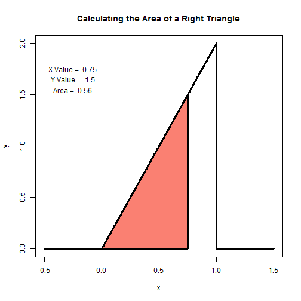

- The plot below shows the R code and the plot that is given in the application.
- The code takes an input from the user for the desired X Value. In the code we use xVal = 0.75.
x <- c(-0.5, 0, 1, 1, 1.5); y <- c( 0, 0, 2, 0, 0)
plot(x, y, lwd = 3, frame = TRUE, type = "l")
title(main = "Calculating the Area of a Right Triangle")
theta <- atan(2/1) #calculate the angle
xVal <- 0.75
yVal <- tan(theta) * xVal
polygon(c(0, xVal, xVal, 0), c(0, 0, yVal, 0), lwd = 3,
col = "salmon")
area <- 1/2 * xVal*yVal
text(-.25, 1.75, paste("X Value = ", xVal))
text(-.25, 1.65, paste("Y Value = ", yVal))
text(-.25, 1.55, paste("Area = ", round(area, 2)))
